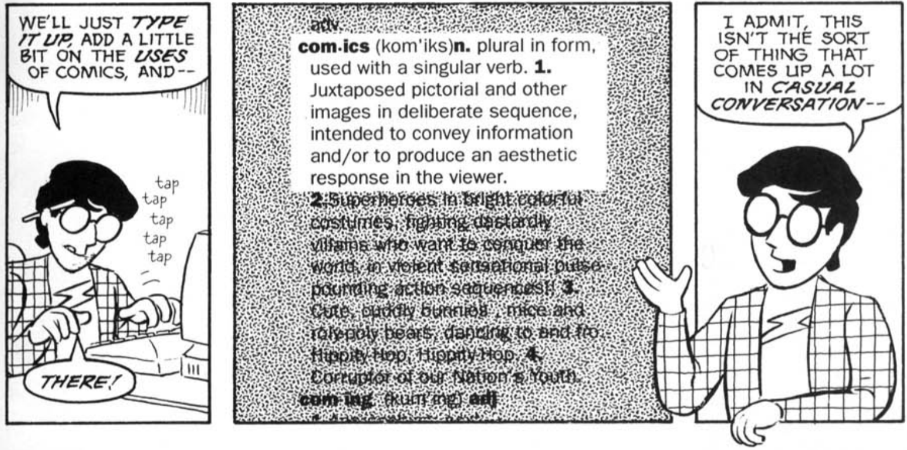
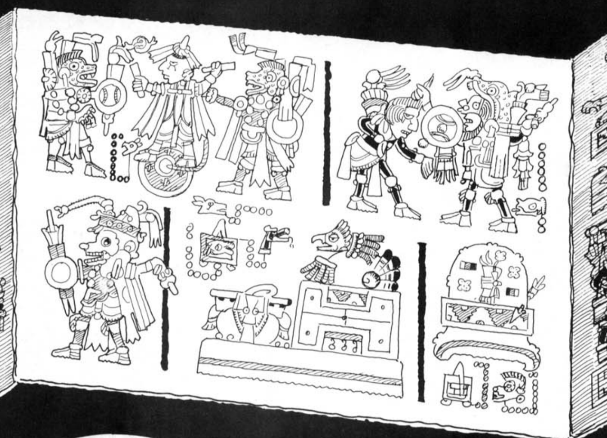
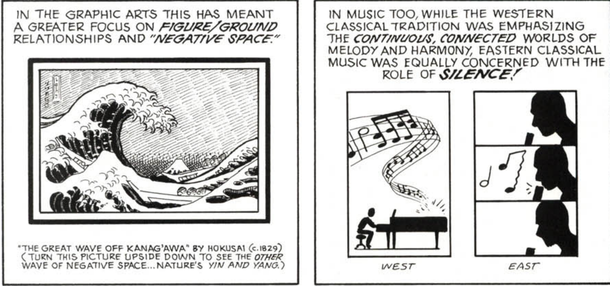

According to Scott McCloud, it is somewhat difficult to define what a comic is because there are so many forms or art that can be called a comic. Scott provides us with the following defiintion: com-ics (n.) : Juxtaposed pictorial and other other images in deliberate sequence, intended to convey information and/or produce an aesthetic response to the viewer. 
This definition is derrived because of the countless ways comics can be used, and the countless ways they can be produced. For example, a roll of film with images before developed, can be considered a sequence, therefore, can also be considered a comic.
The "comic-style" format of art and story-telling can be seen in early civilization pieces such as a pre-columbian picture manuscript known as "Ocelot's Claw" alledgly discovered by Cortes in 1519.
Works such as Trajan's Column, Greek paintings, Egyptian glyphs and painting and japanese scrolls all suggest that what seems like a modern art form is actually ancient.
Art usually influences music. Throughout history, musicians have followed art trends. For example, Claude Debussy is known as an impressionist composer as he captured the light, flowy motions of impressionist art in his compositions such as clouds and claire de lune. This is done by using fragmentaions and intervals that represent space and figure/ground.
A common goal in all mediums including theater, art and music is minimalism. To use the least amount of elements to create an interesting compositon.
I appreciated the way McCloud connected art forms. Similar to John Berger, McCloud wants art to be accessible. I think it is important to understand art history, especially ancient art so we can 1. see that we are not that different from our ancestors and 2. understand our art forms better. McCloud does a great job of applying the history of this form in an easy to digest way. I think it's important to understand the roots of the medium otherwise it's really easy to get lost in trying to define what the intention of the artwork is.
{kind=link}